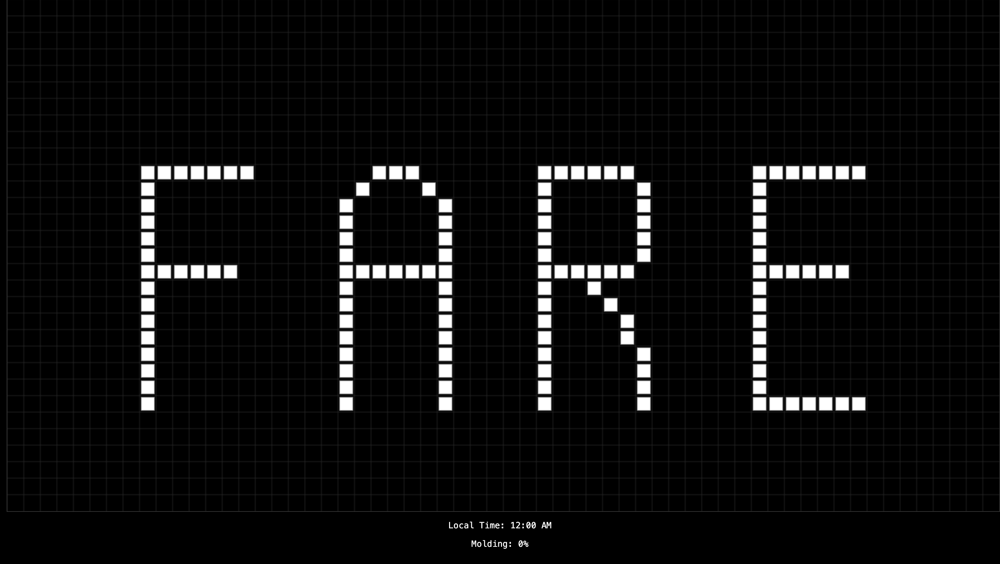
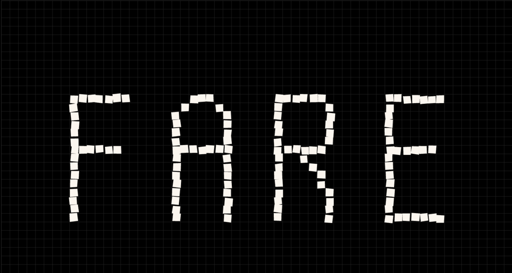
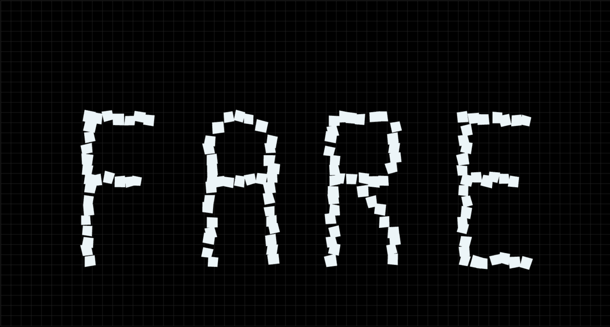
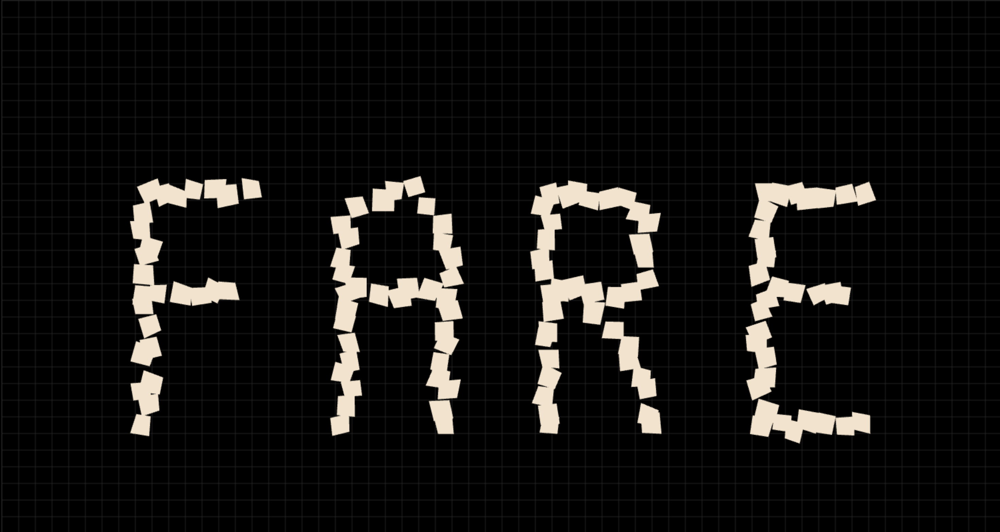
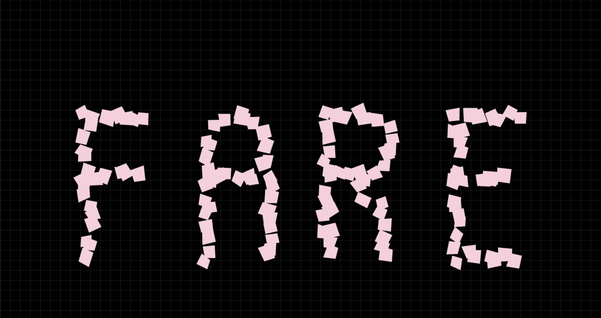
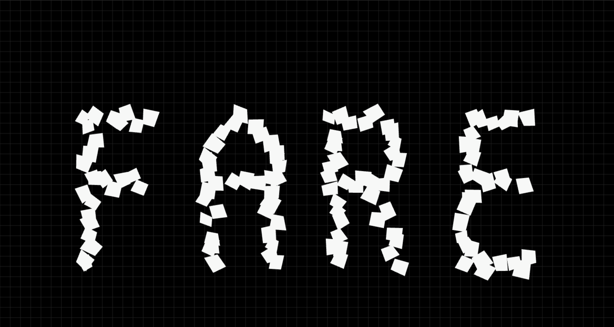
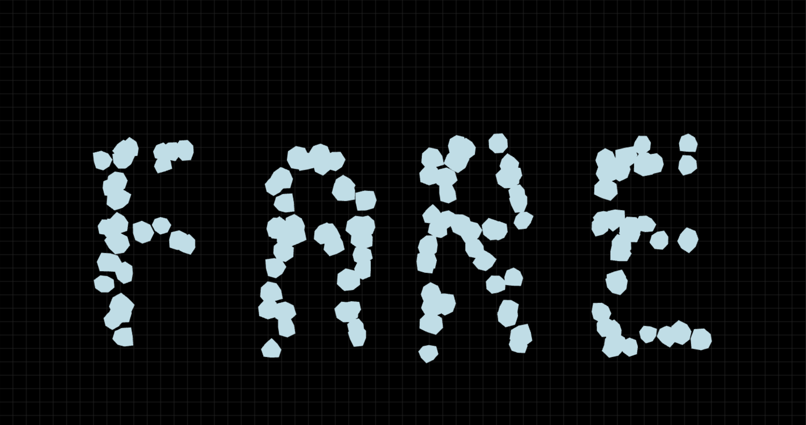
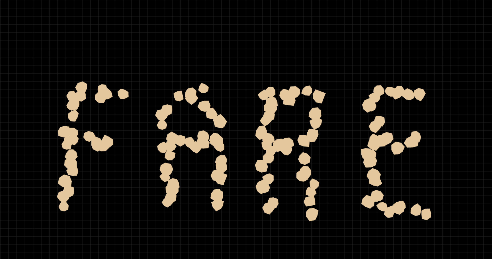
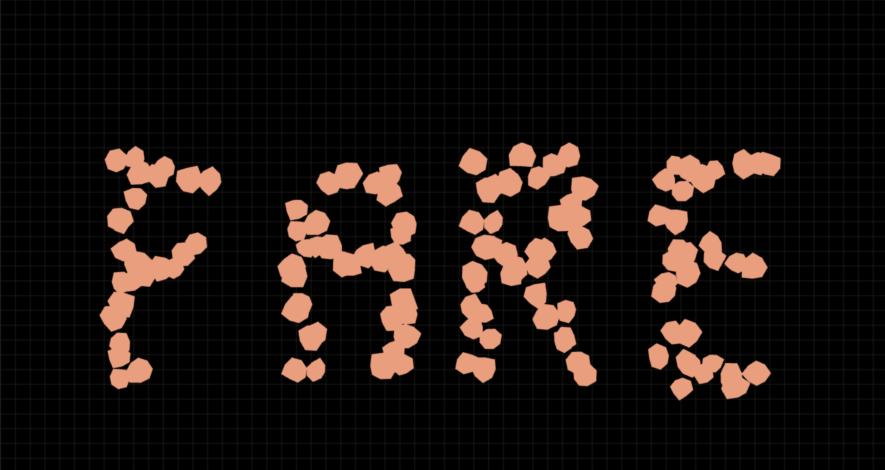
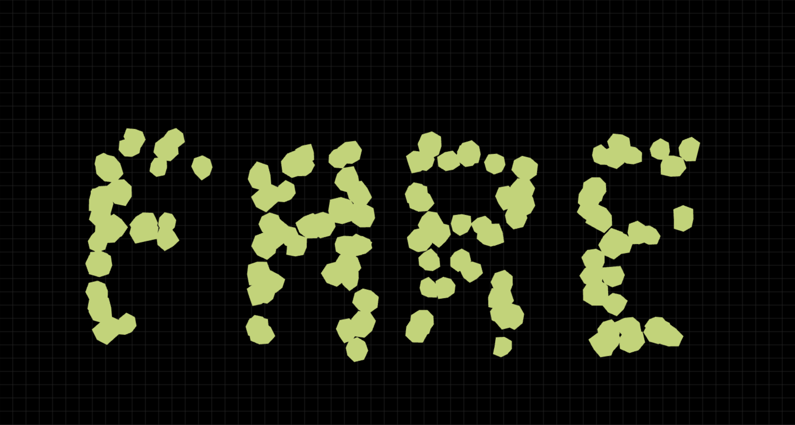
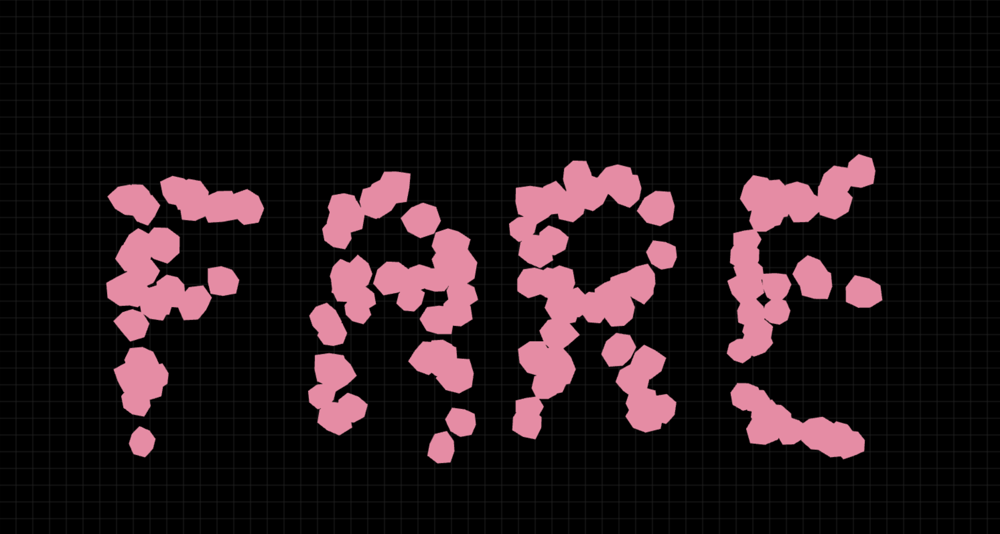
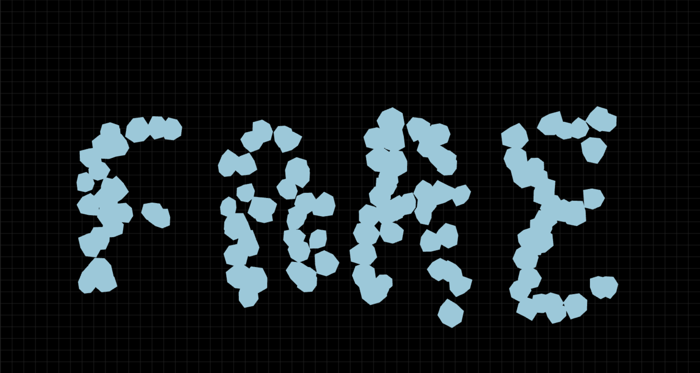
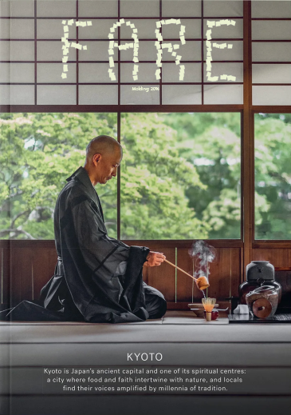
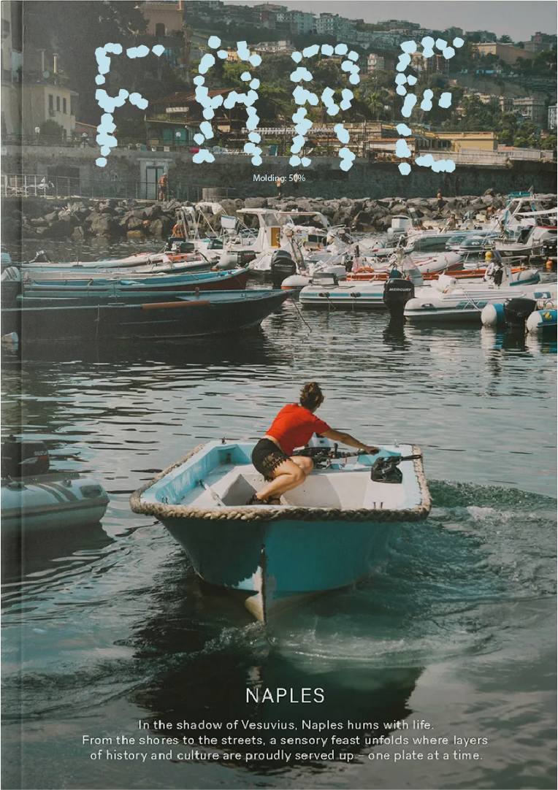
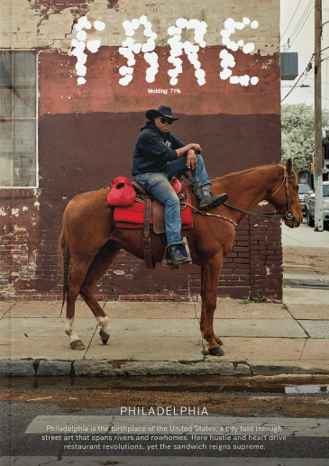

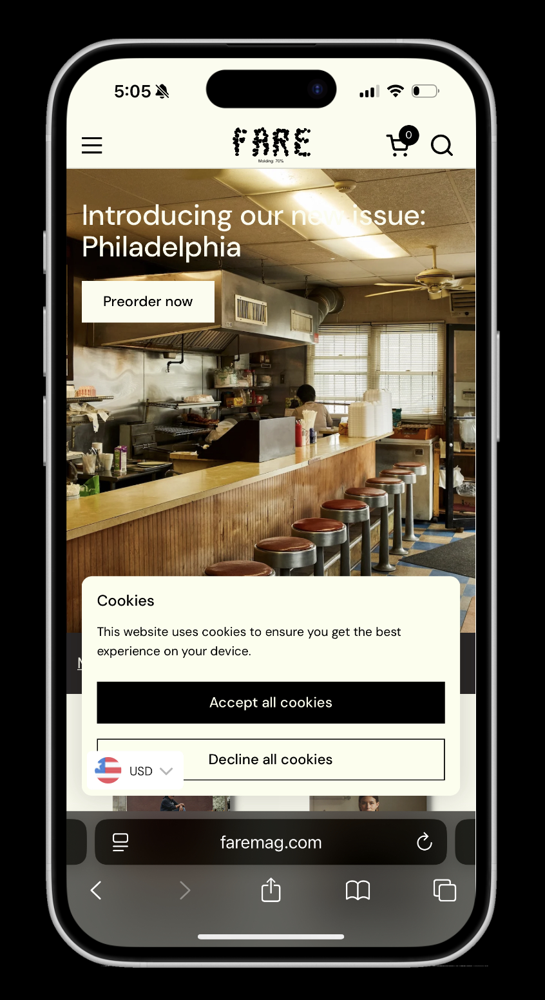
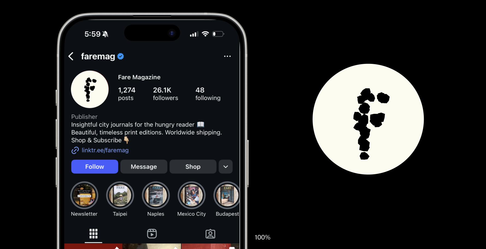
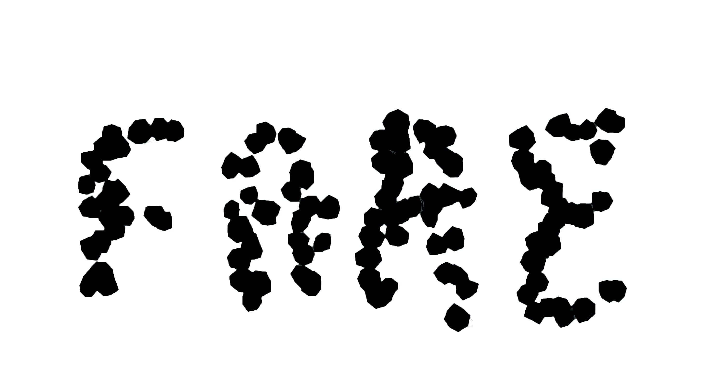
Fare is a food-focused travel magazine exploring the depth of culture in a single city. I have redesign the logo for this periodical that evolves over time according to the 24 hours of the day. I have taken inspiration from the process of food molding as the day goes by to design it into a fun and fascinating logo. The logo slowly looses its structure and grows its own form by the end of the day. Each publication will have the logo according to the time in the city where it is being published.
Softwares used: Html, CSS, Javascript & Adobe Illustrator
















